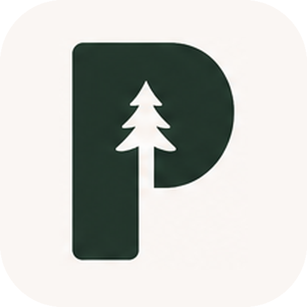

The interface
The web app is the user interface (UI), where a user sends messages, chooses agents, reads replies, opens files, and inspects work. It can also run as an installed progressive web app (PWA).

PonderosaDocs · LearningBegin here
Ponderosa is a self-hosted workbench for persistent AI teams. It organizes agents so you can give a team a goal, follow its coordination, and direct the work.
Use Codex or Claude Code through your existing subscription sign-in. Start with one Chat and one task; a team is optional. The first-run walkthrough covers macOS, Linux and Windows.
Ponderosa 1.0.0-beta.1 public beta. Download Ponderosa for macOS on Apple Silicon, Windows x64 or Linux x64. Connect Codex or Claude Code through your subscription sign-in and start your first Chat. Internal browsing is included.
Use a team to divide a research question, develop and review a creative project, act out a simulation, or explore how different roles affect agent interactions. For software work, agents can investigate a codebase, implement a change, and review it. Set the roles, questions and tools to suit the work.
Return to the same team with its roles and working history for each new task. Ponderosa coordinates assignments, messages, human decisions, files and execution, with a visible record of the work.
Teams keep their identities and saved work across sessions. Ponderosa selects relevant context for each turn, and agents retrieve older information as needed.
A Chat is the product home for one agent organization, its human conversation, and its instructions. A user can return to that team or open another Chat for different work.
A team uses a working folder on the host for notes and files. Use an ordinary folder or choose the optional Separate Git copy mode for code work. Provider processes run with the host account’s file and shell access, so choose that account and its permissions to suit the work.
The web app is the user interface (UI), where a user sends messages, chooses agents, reads replies, opens files, and inspects work. It can also run as an installed progressive web app (PWA).
A local service accepts actions from the interface, checks who owns the work, coordinates execution, and sends updates back. Fastify is the TypeScript web-server framework used to implement this service.
A database and saved files record team identities, communication, assignments, execution, uploads, and results. Different records have different responsibilities.
Codex CLI or Claude Code performs the AI work through the host account’s subscription sign-in. Ponderosa’s adapters translate between its shared contracts and each provider’s interface. Models, reasoning options and supported features can differ.
Inside the server, the scheduler chooses which waiting work can run. Tool handlers carry out Ponderosa-specific operations requested by an agent, such as assigning work or publishing a result. Both run as components of the local service.
Communication means an intentionally sent message with an identified sender and audience. Activity is evidence of execution, such as a command, tool call, file change, or error. A Decision is a recorded question for the user, such as choosing an option or approving a particular action. These are separate because running a command, sending a reply, and receiving approval are different events.
For a noncoding application of those same parts, follow the research-team example alongside the file-task walkthrough.
README.mdAGENTS.mdapps/server/src/app.tspackages/core/src/adapter.tsapps/server/src/routes/projects.tsapps/server/src/AGENT-WORKING-COPIES.mdYour first session
Install the provider on the computer running Engine, open a Chat, and ask for one small result. Start with a single agent and an ordinary working folder.
Download the package and release notes for your platform. Ponderosa includes its own Node runtime. Install Codex CLI or Claude Code separately and sign in under the account that runs Engine. Agents use that account’s files and shell, so begin with non-sensitive material in a suitable working folder.
Use macOS 14+ on Apple Silicon. Open the DMG and copy Ponderosa Engine.app to Applications. Set up your provider in Terminal under the account that runs Engine.
Use Ubuntu 24.04 x64. Install the .deb package as described in its release notes, then find Ponderosa Engine in the application menu. Set up your provider in a terminal under the same normal user account.
Use Windows 11 x64. Run the installer under your login account and open Ponderosa Engine from Start. The default installation folder is %LOCALAPPDATA%\Programs\Ponderosa. Set up your provider in PowerShell or Windows Terminal under the account that runs Engine.
Follow the official Codex CLI instructions or Claude Code setup instructions for your operating system. Install and sign in on the Engine host even if you view Ponderosa from another device.
codex login and complete subscription sign-in.claude and complete subscription sign-in.These commands sign in through your provider subscription in the macOS/Linux terminal or Windows PowerShell. Ponderosa supports subscription sign-in only. If it reports an API-key environment variable, remove that conflicting setting from the Engine account’s launch environment and recheck subscription access.
Engine searches its launch environment’s PATH and known platform locations. Your terminal can have a different PATH. Check the provider executable’s actual location under the same account, then configure an explicit path if discovery misses it.
Set an absolute providers.codex.executable or providers.claude.executable in the launcher root’s config/launcher.json, preserving other fields. Quit Engine before editing and reopen it afterward. You can also select the executable through PONDEROSA_CODEX_BIN or PONDEROSA_CLAUDE_BIN in Engine’s launch environment. Subscription sign-in remains with the provider CLI.
Open the composer’s Add attachment or capability menu and choose Files. Select a small text file you can share, check its filename, and resolve any upload error with the attachment’s Retry control before sending. Ask the agent to summarize that file and save a short result. Confirm the reply refers to the intended contents.
Read the reply where you sent the task. Follow its result link or open the Agent’s Files & Results to inspect and download saved output. Uploads supply input; agents publish selected working files as saved results. Short answers can arrive directly as replies.
Close the web tab and use Open Ponderosa to return to the saved Chat. Closing a tab leaves Engine running. Quit Engine stops the service and can interrupt active work; save unsent text and review active Agents first. See stopping and recovery and data locations and saved roots.
Each provider uses its own subscription, available models and reasoning options. Choose the provider and model in the composer, and use Provider Settings to check sign-in and access. Tool availability follows the provider’s capabilities and host configuration.
A provider request rejected for access, quota or model availability needs attention in that provider’s setup. Check the reported error and select an available model or restore access before retrying.
apps/launcher/src/providers.tspackages/engines/src/auth.tsapps/web/src/components/ComposerRuntimeSelector.tsxapps/web/src/components/chat/Composer.controls.tsxThe big picture
The interface talks to the server. The server coordinates provider execution and saves its records. The browser is a client of that service.
The interface uses HTTP (Hypertext Transfer Protocol) to talk to the server. REST (Representational State Transfer) describes its ordinary request/response API, or application programming interface. SSE (Server-Sent Events) carries live updates back to the interface.
Messages, files, Decisions, and activity displays
Accepts actions, checks ownership, stores records, and publishes updates
SQLite, message/event journals, uploads, and managed results
Runs on the host and sends model inputs to the provider’s AI service
In the REST path, the browser asks the server to send a message, and the server returns the result of that request. The browser also requests conversation history and other displays this way.
Server-Sent Events, or SSE, is a long-lived HTTP connection that lets the server send updates without waiting for the browser to ask for each one. The interface uses those events to update visible activity and refresh the records it displays. SSE updates and REST responses are different paths.
The adapter translates provider activity into shared Ponderosa event types. The server checks that the event still belongs to the current execution, then appends the accepted event and updates the stored views derived from it. It publishes applicable Agent and workspace updates over SSE. The interface applies bounded live updates and refreshes its queries.
A read model is a view organized for reading, such as an Agent’s current status or a page of conversation history. Server/store code builds it from the saved records, and the server sends changes to the browser.
An ownership check compares an action with the resource’s recorded identities and permissions. For an agent tool call, the server checks the current Agent, Run and permitted action. For a managed saved file, it checks the file’s owner and intended audience. Provider filesystem and shell access follows the host account’s permissions.
A command-completed event reports something that happened. A Ponderosa tool call asks the server to perform an operation. The server validates the request, performs the permitted operation, and returns a tool result. Ordinary shell and file tools execute through the provider’s own harness.
apps/server/src/app.tsapps/server/src/routes/provider-run-executor.tsapps/server/src/runtime-event-authority.tspackages/agents/src/store-event-projection.tsapps/server/src/agent-event-service.tsapps/server/src/routes/streams.tsapps/web/src/hooks/useAgentStream.tsapps/web/src/api/real.tsapps/server/src/routes/provider-dynamic-tool-handler.tsWalkthrough
Follow one requesting agent as it reads a specification, uses tools, publishes a report, and replies to the user.
A user asks a requesting agent: “Read specification.pdf, identify unclear requirements, and save a short report.” The user selects that existing agent and attaches the Portable Document Format (PDF) file.
In the interface: The composer shows the selected attachment as input for the message.
The interface stages the upload and associates its identity with the send attempt. The server stores the uploaded bytes and metadata before preparing them for the recipient.
The user clicks Send. The interface submits the text, recipient, attachment references, and settings for that attempt.
In the interface: The message appears in the conversation. Recipient delivery badges can show Queued, Preparing, Started, or Delivered as the delivery progresses.
The server validates the message and attachment owners, records communication, and records the work that should reach the recipient. Repeating the same attempt is distinguished from composing a new message.
When execution capacity is available, the scheduler gives the requesting agent a turn.
In the interface: The conversation can show that the agent “is working,” with elapsed time. Open the Agent’s Technical details to inspect its execution records.
The turn is a Run. The server prepares the selected instructions, relevant messages, tracked work, and attachment material, records the exact provider input, and starts or continues the provider session.
The agent reads the specification using its available tools and writes report.md in its working directory.
In the interface: Open the Agent’s Technical details to follow commands, tool results and file changes. During a quiet period, check its status and latest activity. Replies appear in the conversation when the agent sends them.
The provider performs the tool operations. Ponderosa receives and records normalized activity such as tool calls, command results, and file changes. The exact tools depend on the provider and configuration.
The agent intentionally publishes report.md with ponderosa_import_file.
In the interface: The user can open a linked managed result or find it in Files & Results. The returned reference gives the agent something precise to include in its reply.
The server checks the current execution and stable file bytes, captures the file into managed storage, and returns an artifact identity. An artifact is a saved result that can be referenced and downloaded independently of the temporary provider process.
The agent calls ponderosa_message with its explanation and the saved result reference.
In the interface: The conversation shows the agent’s reply and file link. Delivery of that reply, completion of the Run, and completion of any tracked assignment are separate facts.
The server validates the reply’s audience and current execution, records the authored communication, and updates the displays. The Run is finalized separately when execution ends.
If the server saves a message and the connection breaks before confirmation, retrying the same attempt recovers its recorded result. Ponderosa uses an idempotency key to identify the attempt and a fingerprint to check its content.
For a shared message, the server derives the communication identity from the Chat and attempt key. A matching retry returns the original result and reconciles its display. Reusing the key with different content is rejected. External actions have their own effects, so inspect their current state before repeating uncertain work.
An HTTP 202 Accepted response can mean the message is saved while its display is still being recovered. The interface reconciles that attempt using its recorded receipt. Delivery state and the agent’s reply show subsequent progress.
The working file, its managed publication, and the authored message are different operations. The agent publishes the intended result and then sends a reply that references it.
A user asks an agent: “How could a school library support both quiet study and group work? Compare the evidence, identify trade-offs, and produce a short brief with source links.” The agent can work with other agents to answer this question in an ordinary Ponderosa conversation.
Choose the question and material. The user can attach a few reports, provide links, or simply state the question. The agent uses that starting material and keeps the team’s notes in a shared folder. The user sees their question and any attachments in the conversation. This gives the team a clear question and a common starting point; uploading a file is optional.
Divide the question when that helps. The agent can ask one agent to study the evidence about quiet study and another to study the evidence about group work. It tells each one what to investigate, which sources to use, and what findings to return. The user can leave this division of work to the agent and receive one combined answer. Looking at each need separately helps the team compare them fairly. A small question can stay with one agent.
Check what the sources support. Each agent reads the material, assesses source quality, and connects findings to sources. It distinguishes evidence from interpretation and searches for more material when needed using the available tools. The brief includes source links and explains any gaps, so the user can review the reasoning.
Review and integrate the findings. The agents return their findings to the agent handling the user’s question. It compares the evidence, explains disagreements, and drafts a combined answer. It can ask another agent to check the draft against the cited sources. The user gets an answer that shows the trade-offs and any unresolved questions, which makes it easier to decide what would suit the library. Another review is optional. The agent asks the user for an answer or approval only when the work needs it.
Save the result and reply. The agent writes a research brief, saves it in Ponderosa, and sends the user a message explaining its findings with a link to the document. The user can open the brief from the conversation or find it in Files & Results. Saving the brief makes it available to read and download after the agent finishes. For a short answer, the agent can simply send the findings as a message.
The same approach can organize creative work or experiments in agent collaboration. Set roles and questions for the exercise; tool and file access follows each agent’s configured permissions.
For the technical details, see Agent delegation and review, Provider tools, MCP, and skills, and Inputs, working files, and saved results. The file-task walkthrough also explains saving a result and sending the reply.
apps/web/src/components/useConversationMessagingController.tsapps/server/src/routes/conversation-deliveries.tsapps/server/src/assets.tsapps/server/src/routes/agent-run-preparation.tsapps/server/src/routes/provider-run-executor.tsapps/web/src/components/MessageDeliveryStatus.tsxapps/web/src/components/ConversationComposerStatus.tsxpackages/core/src/managed-tools.tsapps/server/src/file-publication.tsapps/server/src/routes/agent-coordination.tsapps/server/src/routes/agent-request-commands.tsapps/server/src/routes/projects.tsapps/web/src/components/AgentWorkInspector.tsxapps/web/src/components/AgentDetail.header.tsxapps/web/src/components/AgentDetail.panels.tsxTeam communication
Use the shared Chat for work the team should know about. Open an Agent’s chat for a focused conversation with that Agent.
A shared Chat message supplies team context, with one Agent responsible for answering. A direct Agent message goes to its selected recipients. Check the recipient controls before sending. Teammate deliveries appear in the Agent’s timeline with their authors and delivery status; your queued messages appear in the editable queue tray.
A Broadcast is shared knowledge for the Chat’s organization. A Direct Message is user communication with explicit agent recipients. Collaboration is intentional agent-to-agent communication. These distinctions allow a shared user conversation and private or focused work to coexist.
Agents inherit Broadcasts as organizational context. Direct Messages and Collaboration keep their recorded audiences. Tool output stays in the execution record, while authored replies appear in the appropriate conversation.
The interface distinguishes the human-facing conversation from an Agent’s execution record. A user should be able to read useful replies without every command and tool result filling the shared conversation. Detailed execution remains available in the Agent’s Technical details.
The server routes messages using stable Agent identifiers (IDs). Use the recipient controls to choose the audience; names and handles help you recognize each Agent. In Ponderosa, @ references working-folder files and folders.
The server selects a bounded amount of context for each turn. That selection can include instructions, relevant communication, attached work, and authorized artifact references. A source manifest records what was submitted and what was already retained in a compatible provider session, alongside the exact submitted text and its hash.
Provenance records where information came from. For a provider input, it identifies the messages and saved sources used to assemble it. For a published file, it links the result to its originating Agent, Run and captured bytes. Use those links to trace a result and review its sources.
A hash is a compact fingerprint of bytes that Ponderosa uses to detect changes to a packet or file. Agents retrieve older messages as needed, keeping current input focused on the task.
No. It receives the submitted assignment and the context selected for its own turn. The requester must provide the facts and references required for the review.
AGENTS.mdapps/server/src/routes/conversation-deliveries.tsapps/server/src/routes/agent-run-preparation.tspackages/core/src/managed-tools.tsapps/web/src/api/real.tsScheduling
The scheduler chooses which accepted work can run and coordinates execution without losing track of work that must wait.
A message waits when its agent is busy, execution capacity is full, or the provider is unavailable. Ponderosa saves a reason for the agent to receive work, called an Activation, so the scheduler can return to it when the agent is ready.
Execution admission is the decision to let waiting work start now. The scheduler checks the work’s permitted scope, existing active work, applicable provider readiness, and configured capacity limits. Concurrency means how many Runs execute at the same time. Host-resource admission is the additional check of whether the host has measured room to start more work.
When an agent can run, the scheduler claims one Run, which is a tracked execution turn. Waiting work remains recorded until it can receive a turn. Only scheduler authority creates or claims Runs.
A lease is a time-limited ownership claim. The worker renews it while it is legitimately running. If it disappears, the lease eventually expires so recovery can examine the work.
A fence is an ownership version. Cancellation or replacement advances it. The server rejects output carrying an older version, preventing a previous worker from committing late output after ownership changes.
While an Agent is responding, use Queue message to save your follow-up for after the active response. The Queued messages tray shows your pending inputs and their order, with controls to edit, delete or steer them. Teammate deliveries keep their own waiting status in the Agent timeline.
Use Steer to send a correction to active work, such as “Use the revised file instead.” Its delivery state shows progress toward the provider; the next reply shows how the agent handled it. For an unconfirmed submission, use that attempt’s recovery control to reconcile the original message. Try Delivery Again retries delivery. Try Work Again can repeat work and may require confirmation.
Ordinary delegated assignments wait for the next Run. Steering delivers a correction to active work through the provider’s supported path. The editable user queue contains pending next-Run messages authored by the local user; teammate messages and assignments retain their own delivery records.
One accepted action can require several effects. For example, coordination can be recorded before its journal placement finishes. An outbox saves the remaining effects so the service can resume them after an interruption. Its handlers recognize effects that have already been applied and keep a single recorded result.
The scheduler distinguishes work that failed before submission from work that may already have reached a provider. The latter needs inspection before retrying. Resource admission checks capacity before starting a Run; memory use can still grow during execution.
The host-pressure sampler runs on Linux. It observes available memory and memory/input-output pressure, including relevant operating-system resource groups. If those measurements are missing, stale or unsupported, it reports resource protection as unavailable. Configured concurrency limits continue to control how many Runs can execute.
apps/server/src/coordination-v3-scheduler.tsapps/server/src/coordination-scheduler-service.tspackages/agents/src/coordination-v3-scheduler-lease-authority.tsdeploy/README.mdapps/server/src/resource-admission.tsExecution
An Agent is the team member. A Run is one tracked turn. A provider session is the context and process used to execute one or more turns.
The same Agent can perform many tasks over time and use several provider sessions. Its identity, role, settings, and saved history belong to Ponderosa. Its current model context belongs to Codex or Claude.
After a Run ends, the server can keep a provider process warm for a follow-up or close the idle process while retaining session metadata. Process liveness is tracked separately. The same Ponderosa Agent continues across reused and fresh provider sessions.
A fresh session receives a bounded seed: initial input assembled from the appropriate instructions and saved sources within size limits. A compatible continued session receives the current input and required new context alongside what it already holds. The server records the submitted packet and its sources for inspection.
The Adapter is the shared contract between Ponderosa and a provider. It supports capabilities, model/effort choices, fresh or continued execution, and persistent sessions where supported. Codex’s persistent path uses its app server; Claude’s persistent path uses its streaming interface. Provider-specific events are translated within packages/engines.
The Agent’s saved assignments and communication remain after a provider failure. The service classifies the Run as failed or uncertain, cleans up its processes, and determines whether a continuation can resume the session or needs fresh saved context. Check the provider error for sign-in, access or execution problems.
packages/core/src/adapter.tspackages/engines/src/codex.tspackages/engines/src/claude.tsapps/server/src/runtime-authority.tsapps/server/src/routes/provider-run-executor.tsWalkthrough
An AI agent can manage a team’s work while remaining accountable for the answer requested by a human.
In this example, the requesting agent is responsible for the user’s report. It delegates a specific review to a reviewing agent. If the reviewer is created under it, the requesting agent is the manager agent and the reviewer is its child agent.
A manager relationship records accountability. Private messages keep their audiences, and each management action passes the server’s ownership and scope checks.
The requesting agent asks for something concrete: “Check report.md for requirements that were missed. Return the finding and a reference to any saved review.” For an existing agent, it uses ponderosa_coordinate. To create a managed child with opening work, it uses ponderosa_create_managed_agent.
A Request records the requester, recipient, assigned work, lifetime and eventual outcome. A Join groups one or more Requests and defines when their owner should continue.
The requesting agent can end its current Run while its parent assignment stays open. The scheduler starts the reviewer’s own Run when eligible, with its own provider execution.
The reviewing agent records its outcome with ponderosa_update_request, including an artifact reference when useful. That recorded outcome is the formal handoff to the coordination system.
The Join or supported callback creates the appropriate continuation for the owner. The requesting agent reads the result, makes any needed changes, and sends the user a reply. If it also owns an inbound parent Request, it records that parent’s outcome after integrating the child work.
A failed, cancelled or unavailable child outcome also releases the wait. The requesting agent handles that outcome, explains what remains unresolved, and decides the next step.
Agents use the shared working folder by default for research notes, creative work or code. To separate Git-based work, choose Separate Git copy in Agent Settings. That choice persists across Runs. Working-folder mode is selected in Settings; managed creation and delegation tools use the Agent’s configured mode.
The failed outcome releases the wait. The manager can report what failed, request another review, or continue with other authorized work while keeping the unresolved review visible.
packages/core/src/managed-tools.tsapps/server/src/routes/agent-creation.tsapps/server/src/routes/agent-coordination.tsapps/server/src/routes/agent-request-commands.tspackages/agents/src/coordination-v3-task-lineage.tsapps/web/src/components/AgentDetail.settings.tsxCoordination in detail
Requests name individual assignments. Joins collect their outcomes so one owner can decide what to do next.
Suppose a requesting agent asks two reviewers to inspect different parts of a report. Each reviewer needs its own Request. One aggregate Join can track the common fan-out and return the collected outcomes to the requesting agent.
The Join’s condition determines when it has enough outcomes: all assigned results, one qualifying result, or a quorum, meaning a specified number of qualifying results. Its wake policy determines whether the requesting agent gets a new turn as results arrive or after the final combined outcome. The parent assignment stays open while intermediate progress is reported.
These records live in SQLite coordination state with stable identities, scope and links to the Runs that created or handled them. Request outcomes supply completion signals; follow-up messages remain communication.
Cancelling an exact outbound Request ends that requested work. The recipient may still have other work attached to its Run. Enforceably stopping an active descendant Run is a separate management operation that binds the observed Run and advances its execution fence.
Failure, cancellation, expiry, recipient unavailability and unknown outcome remain distinct states. The owner uses the recorded outcome to decide whether to retry, inspect uncertain work, or report the remaining gap.
packages/core/src/managed-tools.tsapps/server/src/routes/agent-coordination.tsapps/server/src/routes/agent-request-commands.tspackages/agents/src/coordination-v3-task-lineage.tspackages/agents/src/coordination-v3-run-lifecycle-authority.tsHuman control
A Decision records a question and routes its answer back to the work that needs it.
An agent might ask, “Should this report include an estimate?” or request approval for a specific management operation. The interface displays that question as a Decision with choices or a text response. The record connects the answer to its originating work.
A blocking Decision pauses the associated task for your answer. The server saves that wait and links the response back to the work that asked, allowing the agent to continue from that point.
Use Skip question to cancel a Decision and decline its live provider request. Skipping leaves approval-dependent work unauthorized. Unanswered questions stay visible until answered or skipped; other notification controls clear alerts separately.
Some Decisions bind an exact operation, such as a management plan or saved-browser access. Approval authorizes that recorded action under its current owner and identity checks. A changed scope or later operation needs its own authorization.
A provider can ask for a connection confirmation or form response, called elicitation. Ponderosa displays a Decision while a live broker holds the callback needed to return your answer. The saved question can remain after that callback expires. An expired request needs a new question from the agent.
The server rejects invalid choices, changed owners, stale approval scopes and expired callbacks. After approval, the action’s execution status shows whether it completed.
apps/server/src/routes/agent-decisions.tsapps/server/src/routes/application-routes.tsapps/server/src/runtime-elicitation-broker.tspackages/core/src/managed-tools.tsContinuing long work
An agent has been working through a large specification. Its current context is filling up. Ponderosa can prepare a short handoff and a fresh session so the agent can continue the same work.
Context is the information the provider currently holds for the conversation. A handoff is a saved continuation note that explains the objective, completed work, unfinished work, blockers, and next action. Session rollover means replacing the current provider session using that handoff and selected saved messages.
The Agent keeps its identity, role, communication history, managed files and tracked assignments. The replacement provider session starts with the handoff and selected saved messages. The handoff belongs to that session’s continuation context.
Blocking Decisions stay open until answered or skipped. A reviewer’s open Request and the Join waiting for it also remain pending until an outcome arrives. Live provider callbacks expire with the process that holds them and may need to be requested again.
Codex and Claude can manage their own context internally. That provider-native compaction is inside the provider’s session machinery. Ponderosa’s rollover is a recorded sequence around a replacement session, with explicit input and acceptance checks.
Automatic Ponderosa rollover is enabled by default for new installations. Change Proactive context rollover in the Provider Session Rollover settings. Saved choices stay in effect when reopening or updating. Rollover uses the provider’s reported context occupancy: the tokens currently held in the session. The configured threshold triggers handoff preparation. Provider input limits still apply, and lifetime token usage is tracked separately from current occupancy.
The server records an exact communication boundary, the cutoff specifying which messages belong to this handoff, and a size-limited selection of recent messages the session being replaced actually received. A content hash is a fingerprint of the saved bytes, so the server can detect a changed message. It then asks the old session before the next Run for a handoff that uses no tools and contains at most 20,000 Unicode characters.
After the handoff instruction is acknowledged and the text is validated, Ponderosa saves the handoff and its rollover linkage. It freezes the selected messages and handoff as the replacement input, keeping later messages for subsequent delivery.
The replacement must report enough headroom, unused space in its context. The low-water mark is a lower occupancy target used to confirm that the refreshed context has room to work. On acceptance, one recorded event switches the accepted session snapshot, Ponderosa’s saved identity of the session now in use, and marks the exact handoff as used. Completion and old-session cleanup are tracked separately.
The default token setting is 150,000 and the window fraction is 0.7. The fraction is the proportion of the provider’s context window used to set the trigger. If the window is known, the threshold is the smaller of that token setting and max(75,000, window × fraction). The low-water mark is 60% of the threshold.
For example, a reported 200,000-token window gives a trigger of 140,000 and a low-water mark of 84,000. The provider’s reported window determines the calculation for each model.
During resume, Codex can try to shrink the existing context before generating its next output. A failed pre-sampling compact has a recovery path that applies before provider work is observed, while the Run is outside a frozen handoff session. The adapter attaches a trusted recovery signal to the error so the server can identify this case.
The server clears the failed resume identity and retries once with a separately recorded fresh input built from saved context. It proceeds directly from that saved context. Authentication, quota, network errors and other tool failures keep their own error and recovery handling.
An unusable handoff receives one corrective retry. If a replacement still has too little free context, Ponderosa records seed overflow and stops automatic rollover. A candidate that ends or is cancelled before confirmation keeps its recovery linked to the exact work and handoff.
If the task ends before the required headroom observation, Ponderosa can discard the unconfirmed context and start the next task from saved context. Failed process cleanup stays recorded and can block replacement. Inspect interrupted external actions before repeating work whose outcome is uncertain.
Lifetime traffic measures past usage. Rollover pressure uses how much context the provider reports holding now. An agent can have spent many tokens while its current context is small.
apps/server/src/context-rollover-pressure.tspackages/agents/src/workspace-store.tspackages/agents/src/coordination-v3-context-rollover-authority.tsapps/server/src/routes/agent-run-preparation.tsapps/server/src/routes/provider-run-executor.tspackages/engines/src/session-recovery.tsCapabilities
Providers supply tools and guidance. Ponderosa adds operations for team coordination and validates them against the current work.
You can think of three layers. The provider’s ordinary tools can run commands or edit files. Installed skills/plugins can guide behavior or expose capabilities. Ponderosa’s managed tools provide messaging, Requests, Decisions, history retrieval, file publication, organization management, and browser actions.
The Model Context Protocol (MCP) is one transport for those capabilities. The Claude adapter’s persistent path can start a local standard-input/standard-output (stdio) MCP bridge: a helper process that exchanges tool requests and responses through process streams. Its authorization token is bound to the current Run. Codex’s app-server path can expose dynamic tools directly. The transport differs, but the server still checks whether the operation is available and authorized for that Run.
A capability authorizes an operation for the current work. Cancellation or replacement invalidates its old authority, so subsequent actions must use the current Run’s permissions.
Skills guide how an agent works within the user’s authorization and the server’s permission checks. External MCP servers are available through the provider and host configuration; install and configure the connectors you want to use.
Tool calls and results appear in the Agent’s execution activity. The agent sends replies separately through the communication tools. Provider-specific event formats live in the engine package; shared tool definitions and data transfer objects (DTOs) live in core. A DTO defines fields exchanged between components, such as the Agent identity and state returned to the interface. The database or journal holds the underlying record.
packages/core/src/managed-tools.tsapps/server/src/routes/provider-dynamic-tool-handler.tspackages/engines/src/ponderosa-mcp.tspackages/engines/src/codex-app-server.tspackages/engines/src/claude-stream-session.tsAGENTS.mdpackages/core/src/dto.tsFilesystem organization
Sidebar folders organize the interface. Working folders hold project files. An Agent can use the shared working folder or an operator-selected managed Git copy.
A display grouping for Chats. Each Chat keeps its own private context and access permissions.
The validated host filesystem folder supplied for the Chat’s work. Agents use it by default and see each other’s changes there.
The actual folder supplied to that Agent’s provider and file-review operations. It can be the shared folder or a separate managed Git worktree.
Ponderosa’s grouping for saved messages, execution records, uploads and artifacts, stored separately from the user’s working files.
An ordinary shared directory can hold research documents, drafts, or experiment notes without being a Git repository. Git is a version-control system for tracking changes; the following optional mode uses it to separate independent file work.
The operator opens Agent Settings → Working Folder → Separate Git copy. Ponderosa prepares a branch and managed worktree starting from the shared repository’s current HEAD, the commit currently checked out there. A worktree is another working directory attached to the same Git repository, with its own checked-out branch.
The selection persists across Runs and provider sessions. The managed folder becomes that Agent’s execution directory and file-review root. Its edits stay in that copy until you integrate them into Shared. Provider commands retain the host account’s file and shell access.
The shared folder must be the root of a Git repository for this mode. If preparation fails, the UI shows the error and a Retry action, and Runs stay paused until preparation succeeds. Changing mode requires the active Run to stop and its provider session to be retired.
Switching back to Shared requests removal of the managed worktree and branch. The service checks ownership and refuses removal while changed, untracked or ignored files, or commits absent from Shared, remain. Save or integrate that work first. If cleanup fails, the separate copy stays selected with its cleanup state recorded.
Choose this mode through Agent Settings. Ponderosa registers and tracks the worktree it prepares there. Worktrees created independently through shell commands remain outside that managed-copy lifecycle.
apps/web/src/components/AgentDetail.settings.tsxapps/server/src/agent-working-copy-service.tsapps/server/src/AGENT-WORKING-COPIES.mdapps/server/src/routes/agent-maintenance.tspackages/agents/src/store-agent-catalog-authority.tspackages/core/src/managed-tools.tsapps/server/src/routes/projects.tsFile custody
An attachment, a working file, and a managed artifact can contain similar bytes while having different owners and lifetimes.
An attachment is an uploaded input associated with communication and its recipients. A working file lives in the shared folder or the Agent’s selected working directory. An artifact is a managed saved result with a stable identity and provenance: a record of the Agent, Run, and captured bytes from which it originated.
The server validates uploaded bytes and their owner before preparing a provider-readable copy. The stored upload remains the source for that copy. Daemon startup cleans stale material left by previous provider processes.
ponderosa_import_file validates the current Run and captures a deliverable’s stable bytes in managed storage. It returns a reference the agent can use in a reply or a later input. File publication, execution and communication each use their own operation.
Ponderosa’s file API checks the owner and registered folder. Provider shell commands use the host account’s broader file and shell permissions, so configure that account’s access for the work you intend agents to perform.
Check the filename and upload status in the composer before sending. If an upload fails, use its Retry control or remove it. After the agent replies, open its file link or Files & Results and download important output.
Check the file’s owner, saved reference and download first. A preview or provider-copy error can occur while the stored file remains intact. Support can use the artifact identity, catalog record and stored bytes to locate the failure.
apps/server/src/project-file-access.tsapps/server/src/assets.tspackages/agents/src/store-artifact-catalog.tsapps/server/src/runtime-attachments.tspackages/core/src/managed-tools.tsapps/server/src/file-publication.tsStorage
Ponderosa saves different facts in different places. Recovery depends on knowing which record is allowed to decide each fact.
SQLite is an embedded database. The server reads and writes its database files directly on the host.
The database contains both durable coordination state and views used for reading. Saved files include authored journals, uploads, artifacts, and host configuration. User working folders remain outside this internal record of the application.
Authority identifies the record that determines a fact. Canonical means the authoritative form of that fact. Browser views display those saved records.
Append-only message/revision and execution-event records own what was communicated and what execution evidence was recorded.
Requests, Joins, Activations, Runs, leases, fences, which inputs reached a provider, outcomes, retry identities, and the outbox are durable authority.
Uploads and managed artifacts retain their content, recorded owners, and provenance, meaning where the bytes came from. User working folders have a separate filesystem history, plus Git history when Git is used.
Provider processes, input/output streams, capabilities, browser control and waiting callbacks belong to live execution. Restart recovery checks saved work and establishes the current execution state.
A projection is a derived view made from defined source records. For example, the execution journal can be reduced into the status and activity views an Agent page queries. If a projection becomes stale, it can be repaired from that source under the supported recovery rules.
SQLite also owns coordination state: pending Requests, execution ownership and terminal outcomes. A complete restore needs that database state together with the corresponding journals, uploads and artifact bytes.
These paths are relative to the configured PONDEROSA_DATA_DIR. Directory names use stable internal owner IDs.
ponderosa.db holds authoritative coordination state and derived query views.projects/<chat-id>/communication-events.jsonl and communication-revisions.jsonl hold authored communication and its edits. JSON Lines (JSONL) stores one JavaScript Object Notation (JSON) record per line.projects/<chat-id>/agents/<agent-id>/events.jsonl holds the Agent's append-only execution record.projects/<chat-id>/artifacts/content/ holds managed result bytes; the artifact catalog maps each logical artifact ID to its stored file, owner and provenance.projects/<chat-id>/agents/<agent-id>/attachments/ holds uploaded inputs for that owner, including staged material whose lifetime differs from a published result.User working folders and managed Git worktrees have separate locations. Include those files alongside Ponderosa’s saved records in your backup.
At startup, data-directory admission checks the saved-state directory’s physical identity, recorded generation and supported database schema. It refuses mismatched or incomplete state. The offline restore tool handles supported historical backup formats before the application opens them.
The internal projects/<id> directories hold Chat-owned records. Access follows the recorded Chat and resource owner.
Their Request, Join, Activation and Run records live in SQLite. Preserve the database together with the journals and saved files to restore that work.
AGENTS.mdpackages/agents/src/paths.tspackages/agents/src/db.tspackages/agents/src/state-admission.tspackages/agents/src/store-component-factory.tspackages/agents/src/store-event-projection.tsContinuity
Refreshing the interface, restarting the server, and losing a provider process interrupt different parts of the system.
The browser reconnects using REST queries and SSE cursors. A cursor records the last update the client has seen, helping the interface reconcile its display with current saved records. Server-owned work continues while the tab is closed.
Live provider handles, Run capabilities, input/output streams and callbacks end. Startup checks saved state and reconciles abandoned Runs. Work that failed before submission can be retried. Work that may have reached a provider keeps an uncertain outcome for inspection before retry.
A separately configured browser supervisor manages browser processes outside the app process. Open tabs and unsaved forms can still be lost during restart or browser replacement; save important input before either operation.
The Agent identity and recorded assignments remain. The service classifies the active Run’s outcome and checks process cleanup. A later turn can resume a compatible session or start fresh from saved context, with process liveness checked separately from the saved session ID.
packages/agents/src/coordination-v3-scheduler-lease-authority.tsapps/server/src/main.tsapps/server/src/runtime-authority.tsapps/server/src/runtime-attachments.tsapps/server/src/browser-service.tsapps/server/src/local-browser-hub.tsapps/server/src/routes/streams.tsapps/web/src/hooks/useAgentStream.tsLifecycle
Stopping an execution, cancelling an assignment, and deleting a Chat are different requests. Each must target the right owner and preserve unfinished cleanup.
Use Stop to cancel the selected Agent’s active work, and wait for its status and cleanup result before starting a replacement. Completed commands, sent messages and written files remain. To return to the app, open it through Engine and preserve the existing Chat and saved data.
Run cancellation binds the current execution and advances its fence, rejecting late events from the old worker. The service sends the termination request and waits for the owned provider process tree to exit.
A Request cancellation targets that assignment. The receiving agent may have other work in the same Run. The server’s descendant-management plan is the separate mechanism for enforceably stopping an observed descendant execution.
Deletion drains provider and browser authority before removing application-owned state. Failed cleanup stays recorded for retry and blocks unsafe replacement or deletion.
Deleting an Agent permanently removes its private execution history after cleanup; shared Chat messages, shared files and coordination outcomes, and working folders remain. The Chat deletion confirmation lists its Agents and warns that Chat history and in-app artifact views will be unavailable. Files in the Project working folder and Project-level artifacts are not deleted. Pending work is cancelled; stop active Agents before deleting. Read the exact confirmation for your selection: there is no archive or undo workflow.
Managed-copy cleanup checks ownership and preserves changed files and commits absent from Shared. Retained working files remain on disk after Chat deletion, while the deleted Chat’s history and in-app views become unavailable.
An unknown outcome means work may have reached the provider, but its completion is unconfirmed. Inspect the current state before retrying, because repeating the work can repeat external actions. A recovery turn can help determine what remains to do.
On Linux and macOS, the service tracks and waits for the owned process group to exit. Windows uses a Job Object to control the owned set of processes. Explicitly configured Linux systemd scopes provide grouping through the host’s service manager. Cleanup targets these recorded process identities.
apps/server/src/runtime-authority.tspackages/engines/src/process-termination.tspackages/agents/src/coordination-v3-run-lifecycle-authority.tsapps/server/src/conversation-deletion-authority.tsapps/server/src/shutdown.tsapps/server/src/agent-working-copy-service.tspackages/core/src/managed-tools.tsBrowser automation
Ponderosa opens and manages a browser for a Chat, with controls for viewing pages, granting agent access and taking control yourself.
Open the Chat’s Browser panel and choose Open browser. Set Remember sign-ins in this chat before opening if you want that profile behavior. Enter a Website address to browse yourself; choose Agent and the intended Agent to grant control, then Take control to interact yourself. The host needs Chrome or Chromium.
Closing the panel leaves its browser running. End browser session closes it. Reopen browser replaces a failed session after confirmation. Save important input before replacement, restart or reload: open tabs, unsaved forms and sign-ins can be lost.
A user can open a browser for the Chat and hand control to an agent under the current grant. The service tracks the browser owner, profile, session, and controlling Run. Watching a page and granting an agent control are different actions.
A browser profile holds cookies, sign-ins and site storage. A temporary profile can be discarded with its session; a saved profile retains this data for later use. Access to a shared saved browser requires an explicit grant for that browser.
Browser mechanics sit behind a driver. The server translates supported inspection, navigation, action, and screenshot requests into that driver. Browser events and screenshots become execution evidence with their own authority checks.
The native hosted desktop runs on Linux. Xvfb provides its virtual display, x11vnc streams the display using Virtual Network Computing (VNC), and xdotool supplies native input. The noVNC viewer shows it through a WebSocket connection authorized by a viewing ticket. The rest of the application uses REST requests and SSE updates.
Local browser and extension pairing are unavailable in this beta. Use Ponderosa’s internal browser for agent browsing.
The pairing entry is hidden, and the server rejects new pairing. The retained extension transport connects a consented Chrome/Edge window through HTTP commands and debugger actions; enabling it requires the Chat/profile access boundary to be completed.
Follow the internal browser instructions to open a session and grant an Agent control.
apps/web/src/components/ProjectBrowserDialog.tsxapps/server/src/browser-authority.tsapps/server/src/routes/browsers.tsapps/server/src/browser-session-manager.tsapps/server/src/chrome-cdp-driver.tsapps/server/src/browser-service.tsapps/server/src/native-hosted-browser.tsapps/server/src/hosted-desktop-access.tsapps/server/src/routes/local-browsers.tsapps/server/src/local-browser-hub.tsapps/browser-extension/README.mdapps/browser-extension/manifest.jsonapps/browser-extension/src/worker.tsRunning the product
The installer supplies the application runtime and host-management tools. Provider CLIs and sign-ins still belong to the host account.
Open the Engine desktop app to manage the local service. For command-line control, invoke the bundled launcher script: start starts the service, and open also opens the interface. Use the platform-specific script path; a global ponderosa command is not installed on every platform.
The server serves the built web app, so a user can use the interface in a normal browser or PWA. Another device needs separately configured network access to that host. Remote access and its security are operator responsibilities.
Engine’s Data field shows the active application data directory. Record it before changing launch settings or troubleshooting an apparently empty installation. For a default launch it is the data child of the launcher root below; an explicit override can select another root.
$XDG_DATA_HOME/ponderosa, or ~/.local/share/ponderosa when unset.~/Library/Application Support/Ponderosa.%LOCALAPPDATA%\Ponderosa, with the account’s AppData\Local fallback.If you used a custom data location, select that same launcher root when reopening or replacing the application. Selecting a different root opens a separate workspace. Check Engine’s Data field if your saved Chats appear missing.
Record the current Data location, preserve important work and finish or stop active Agents. Quit Engine before switching roots. Select the launcher root containing the data child, and preserve that root and its external working folders.
The desktop and bundled launcher accept --data-dir. You can also set PONDEROSA_LAUNCHER_DATA_DIR in Engine’s launch environment. These open saved state in place. Startup checks its ownership and supported format and refuses incompatible state. Run one instance per data root.
These examples select the default launcher root. Replace it with your saved root when using another location:
macOS Terminal
"/Applications/Ponderosa Engine.app/Contents/MacOS/Ponderosa Engine" --data-dir "$HOME/Library/Application Support/Ponderosa"Linux terminal, default .deb installation
/opt/ponderosa-engine/ponderosa-engine --data-dir "$HOME/.local/share/ponderosa"Windows PowerShell
& "$env:LOCALAPPDATA\Programs\Ponderosa\Ponderosa Engine.exe" --data-dir "$env:LOCALAPPDATA\Ponderosa"Use your actual application and root paths, including any XDG override on Linux. Check Engine’s Data, Version and Revision, then open a saved Chat to confirm the selected workspace.
Quit Engine before copying saved state. Keep the whole launcher root and any external Chat working folders together in a separate backup location. To restore, preserve the current folders separately and put the complete copies back at their original locations. Reopen Engine with the same root and check a saved Chat, attachment, result and settings. Do not copy a live database alone.
Updating replaces the application while retaining its data root. Uninstalling removes the application; keep saved data and working folders if you intend to return. Follow the backup and restore steps, update instructions and uninstall instructions. Record the running version and revision when checking an update or restore.
Record Version, Revision, Work intake, active Agent Runs and Data when asking for help. Engine’s live logs provide Server, Errors, Refresh and Copy. Review copied text for secrets and private task content before sharing. Startup errors and ongoing service problems appear through Engine’s status and logs.
The bundled launcher’s status, version and diagnostics --output commands collect status and support metadata. Use the platform-specific script paths. Back up saved data separately, and preserve locks, databases and browser profiles while troubleshooting.
Native installers package the same TypeScript application with a bundled Node runtime, production dependencies, web assets, and build identity. Native modules and process control still have to match the target operating system and architecture.
Use Ubuntu 24.04 x64. Linux supports the native hosted desktop and explicitly configured systemd workload scopes. On Ubuntu hosts that restrict user namespaces, the AppImage requests one-time administrator approval to set up its sandbox.
Use macOS 14+ on Apple Silicon. Native graphical user interface (GUI) launch, provider discovery and shutdown use the Mac implementation.
Use Windows 11 x64. Job Objects track owned provider processes, and executable discovery includes Windows application locations.
Use the package for your operating system and architecture. Its release notes describe installation requirements and any package-specific limits.
apps/launcher/src/cli.tsapps/launcher/src/engine-supervisor.tsapps/engine-desktop/src/main.tspackaging/build-beta-bundle.mjs.github/workflows/native-beta.ymlpackages/native-host/package.jsondeploy/README.mdCode reference
Start with the behavior you want to understand, then trace its interface, server operation and saved records.
apps/web/Conversation controllers handle composing and retry identities. MessageDeliveryStatus defines delivery badges; AgentDetail settings expose working folders. Stream hooks update or refresh visible views.
apps/server/main.ts starts the service, app.ts composes it, route modules accept actions, and runtime authorities supervise current execution. The scheduler and Run preparation/executor connect those actions to providers.
packages/core/Data transfer objects (DTOs), the typed shapes exchanged between components, define communication fields and other shared data. AgentEvent, Adapter, and managed tool schemas let components agree on what data and operations mean.
packages/engines/Codex/Claude transports, capabilities, event normalization, recovery signals, and process containment live here.
packages/agents/Store components, SQLite coordination authorities, journals, projections, state admission, and managed artifact catalogs own the saved facts.
apps/launcher/ · apps/engine-desktop/ · packages/native-host/These handle service control, desktop management, directory authority, and native process handling. Packaging and deploy directories describe assembled artifacts and host services.
This map is for navigating Ponderosa’s source. Teams using the installed application can keep research, creative work or code in their own working folders.
For a repair, trace every caller of the shared function or authority. A UI symptom can originate in intake, context preparation, execution ownership, or a stale projection.
apps/web/src/components/useConversationMessagingController.tsapps/web/src/components/MessageDeliveryStatus.tsxapps/web/src/components/AgentDetail.settings.tsxapps/server/src/main.tsapps/server/src/app.tsapps/server/src/coordination-v3-scheduler.tsapps/server/src/routes/agent-run-preparation.tsapps/server/src/routes/provider-run-executor.tspackages/core/src/managed-tools.tspackages/agents/src/store-component-factory.tspackages/agents/src/state-admission.tsMaintainer reference
To develop Ponderosa, use a dedicated checkout and a fresh development data directory. The server serves the built web app on the same origin: the interface and its API use the same protocol, host and port.
The source requires Node 24 (>=24 <25) and pnpm 11.10.0. Native modules need the host’s compiler and build tools. Install and sign in to a provider CLI under the development account for live provider work.
pnpm install --frozen-lockfile
pnpm buildUse a development terminal with local-only networking and configuration for this instance. Keep production proxy and launcher process-transfer settings in their original installation.
From the repository root on Linux or macOS, this Bash/zsh shell example creates a new temporary data directory and watches the compiled server files:
ponderosa_dev_data="$(mktemp -d "${TMPDIR:-/tmp}/ponderosa-dev.XXXXXX")"
PONDEROSA_DATA_DIR="$ponderosa_dev_data" \
PONDEROSA_HOST=127.0.0.1 PONDEROSA_PORT=8787 \
node --watch apps/server/dist/main.jsOpen http://127.0.0.1:8787/. The server’s entry point resolves apps/web/dist and serves that built interface. REST calls and SSE connections use the same origin. Check http://127.0.0.1:8787/api/health to confirm that this server is responding. If the port is already occupied, stop only your own development instance or choose another port.
$ponderosaDevData = Join-Path ([IO.Path]::GetTempPath()) ("ponderosa-dev-" + [guid]::NewGuid())
New-Item -ItemType Directory -Path $ponderosaDevData | Out-Null
$env:PONDEROSA_DATA_DIR = $ponderosaDevData
$env:PONDEROSA_HOST = "127.0.0.1"
$env:PONDEROSA_PORT = "8787"
node --watch apps/server/dist/main.jsOpen the same host and port address. Use a separate PowerShell window for rebuilds.
In a second terminal, rebuild the web app after UI changes. Refresh the browser to read the new output. Rebuild the server after server changes; Node’s watch mode restarts it when its compiled files change.
pnpm --filter @ponderosa/web build
pnpm --filter @ponderosa/server buildAfter changing shared packages, use pnpm build so dependencies are rebuilt in order. Server restart changes live execution, so finish or stop your development work before a disruptive rebuild. Do not point this workflow at production data.
The web client sends API requests to the origin serving its page. The workflow above serves both the built interface and API from the backend. The separate web dev command uses port 3000 and requires an API proxy to reach the backend; the checked-in configuration leaves that proxy unconfigured.
Configuration reads the process environment. Set the needed variables in the launch terminal or load them through your chosen environment tool. .env.example documents the available settings. Keep credentials and saved application data outside the repository.
pnpm typecheck
pnpm testpnpm verify is an alias for pnpm test. The current test command builds, typechecks, and runs the maintained root-level test runner. The test runner defines discovery and opt-in controls. Choose verification proportional to the change and respect any current stop/freeze instruction. Release-tagging and publication commands are separate authorized operations, not development checks.
package.jsonapps/server/src/main.tsapps/server/src/routes/application-routes.tsapps/server/src/static-content.tspackages/core/src/config.tsapps/server/src/routes/health.tsapps/web/rsbuild.config.tspackages/native-host/package.jsonMaintainer reference
During the agreed beta, external code contributions are not accepted. Authorized maintainer work still needs clear ownership and explicit merge approval.
Before editing, establish the task, approved base, writer, branch/worktree, and current authorization. One writer owns a writable worktree; reviewers remain read-only. A pause or freeze overrides earlier directions.
Use a dedicated branch for product, configuration, schema, test, or instruction changes and present them through a pull request (PR), the reviewable proposal for merging those changes. Do not commit directly to master. Revalidate against the current base and record the exact head and checks performed.
Preserve unexpected dirty state and other agents’ evidence. Do not reset, clean, stash, overwrite, or force-push another writer’s work to make an uncertain handoff look tidy.
Merge with explicit authorization and passing required checks. Record the objective, writer, branch/worktree, base/head, dirty state, commits/pushes, verification, blockers and next authorized action in the handoff.
AGENTS.mdReference
These definitions are a reference to the concepts taught in the chapters.
Further study
Several design choices explain why Ponderosa keeps apparently similar concepts separate.
The shared conversation holds intentional communication. Commands, tool results and file changes stay in the Agent’s execution record, where you can inspect the work behind a reply.
Coordination records give assignments stable ownership, lifetime and outcomes. Those records let the scheduler recover work after a crash and recognize repeated operations.
Ponderosa selects relevant context for each turn and keeps older evidence available for retrieval. This gives agents focused input while preserving the team’s saved work.
Shared folders give agents immediate access to each other’s changes. Choose a separate Git copy for independent code work, then integrate its changes and clean up the copy when finished.
Reference
Each chapter’s Relevant code panel links to implementation entry points after its explanation.
Follow the Relevant code links to trace each feature’s implementation. The links are relative to the source repository and stay usable with a complete source copy. Engine’s Version and Revision identify your installed build.
For a problem report, include the build identity, operating system, provider and the action that failed. Describe what you expected and what happened, and include the relevant Engine error after removing secrets and private task content.
The product framing and visual conventions follow Ponderosa’s website. This beta excludes Wiki, Automations, Branches, Pinecone and local browser/extension pairing.